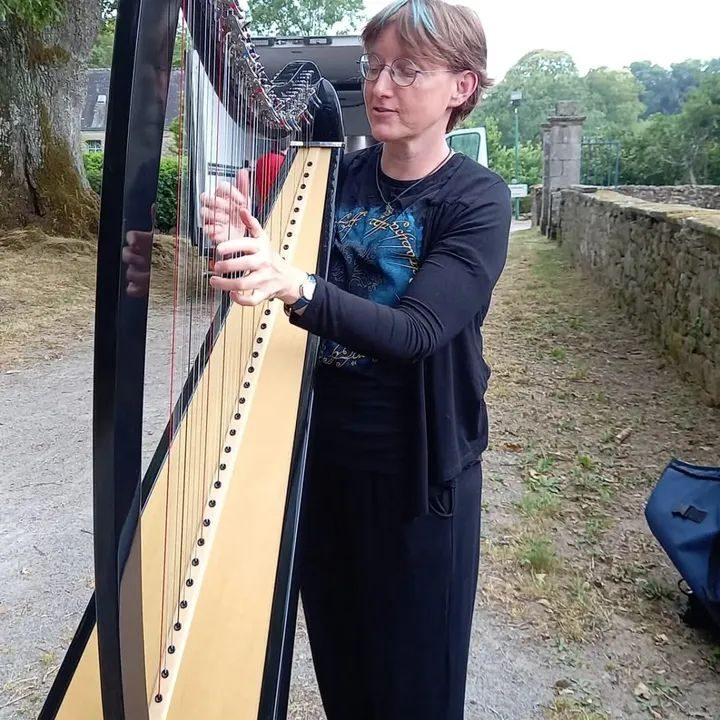
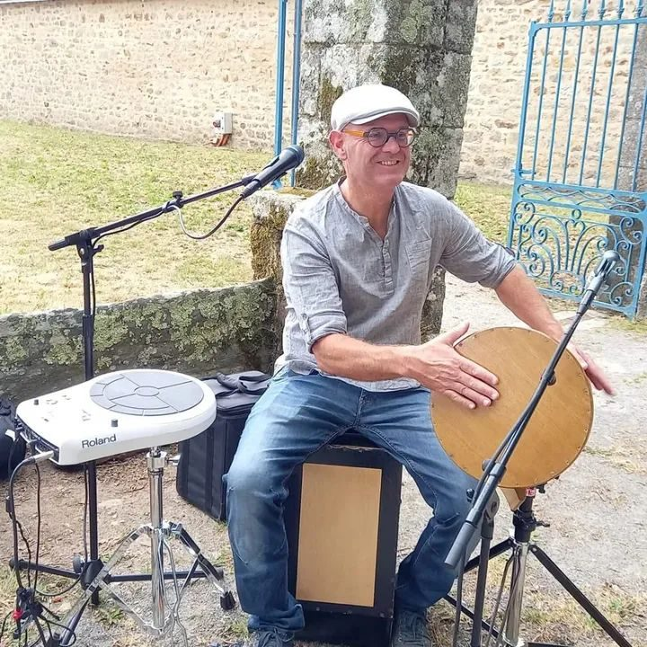

Les musiciens
Issus tous les deux du pays Glazig (région de Quimper, en Finistère), nous nous connaissons depuis que nous sommes tombés dans la marmite de la musique celtique. Après avoir souvent joué dans les mêmes groupes, l’idée a fait son chemin de jouer en duo !

Gaëlle apprend la harpe dès son plus jeune âge au Conservatoire de Quimper avec Dominig Bouchaud qu’elle remercie encore et toujours.
Elle découvre la musique à danser en accompagnant les Eostiged Ar Stangala, cercle celtique de Kerfeunteun tout en obtenant son diplôme de fin d’études musicales et le prix de l’Ufam à Paris.
Avec son frère Eric violoniste, elle apprend très vite à jouer en ensemble et Gaëlle a toujours joué en duo ou en groupe car ce qu’elle aime dans la musique, c’est la complicité du partage !
(Gaëlle joue sur une harpe Camac, modèle Ulysse depuis 2021, après avoir beaucoup aimé jouer sur une harpe Marin Lhopiteau)

Bruno commence à 10 ans au pupitre percussions au Bagad An Erge Vraz. À 14 ans, il s'initie aux danses bretonnes au sein des Korollerien Kerne, puis rejoint les Mederien Penhars, qu’il accompagne musicalement et où il découvre également le chant avec Raymond Le Lann.
À 30 ans, il reprend la musique en autodidacte, commençant par le Bodhran (tambour irlandais) et élargissant sa palette instrumentale au gré des rencontres et des collaborations.
Ce parcours témoigne de la possibilité d'apprentissage continu et de la valeur des échanges dans la musique.
(Bruno joue sur des percussions originales, variées et uniques : cajon, potée, udron, pad électronique, cymbales... )
Groupes où Bruno et Gaëlle ont participé chacun de leur côté :
- Gaëlle : Ensemble Chominciamento di gioia (musique médiévale)
- Bruno : groupe Deus’ta et ensemble Lirzhin (musique bretonne)
Groupes où Gaëlle et Bruno ont joué ensemble :
- Eowyn (musique irlandaise)
- Kerdelenn (musique bretonne),
- L’ensemble An Avel (orchestre pédagogique de musique celtique)
- La chorale des Kanerien San Meryn (chorale en breton dirigée par Jean-Yves Le Ven).